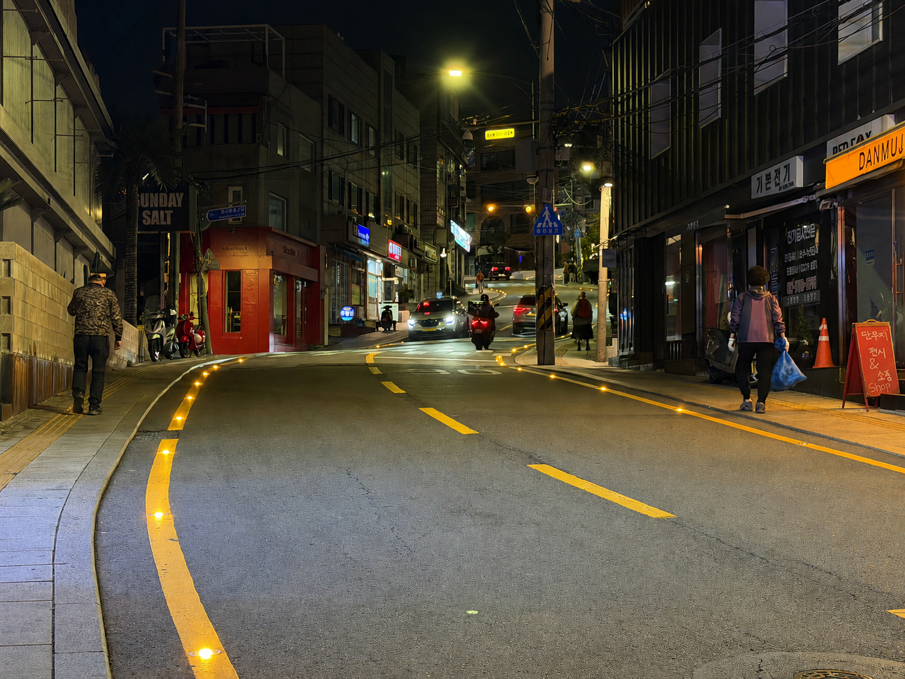

경리단길 솔라표지병 설치, 행안부 주민참여예산 우수사례 선정
940m 구간 태양광 바닥 조명 설치, 생활안전 분야 전국 우수사례

[시사포커스 / 김재록 기자] 서울 용산구(구청장 김경대)가 주민 아이디어로 추진한 '경리단길 솔라표지병 설치 사업'이 행정안전부 주관 '주민참여예산 우수사례' 공모에서 생활안전 분야 최종 우수사례로 선정됐다고 밝혔다. 이태원과 남산 일대에 인접한 경리단길은 개성 있는 상점과 독특한 분위기로 유동 인구가 많은 지역이지만, 경사와 곡선 도로가 이어진 일부 구간은 야간에 보도와 차도의 경계가 뚜렷하지 않아 보행자 안전사고 우려가 꾸준히 제기돼 왔다.
용산구에 따르면, 주민들은 지역의 안전 문제 해결을 위해 해당 사업을 주민참여예산으로 직접 제안했고, 구는 이를 적극 반영해 교통·공공디자인 전문가 자문과 설계를 거쳐 사고 위험이 높고 조도가 낮은 경리단길 940m 구간에 바닥 조명인 '솔라표지병'을 설치했다. 솔라표지병은 낮 동안 태양광을 충전해 별도의 전기 연결 없이도 밤에 빛을 밝혀주는 친환경 안전 시설물이다. 김경대 용산구청장은 "이번 사례는 주민이 직접 지역 문제 해결에 참여해 실질적인 변화를 이끌어낸 뜻깊은 성과"라며 "앞으로도 주민참여예산제를 내실 있게 운영해 주민 의견이 실제 정책 성과로 이어질 수 있도록 하고, 구민이 체감하는 안전한 용산을 만들어가겠다"고 말했다.
이번 우수사례 선정은 지역 사회의 문제를 주민이 직접 발굴하고 지자체가 행정에 반영해 성공적으로 해결한 민관 협력의 모범 사례라는 점에서 의미가 크다. 솔라표지병 설치 이후 어두웠던 경리단길의 도로 경계가 명확해지면서 보행자들의 야간 시인성과 통행 안전이 크게 확보됐으며, 은은한 조명이 더해져 야간 경관 개선 등 지역 상권에도 긍정적인 영향을 미치고 있다. 해당 성과는 행정안전부에서 발간하는 '주민참여예산 우수사례집'에 수록되어 전국 지자체로 널리 공유될 예정이다.